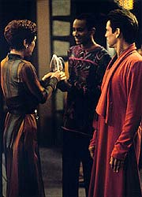
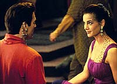
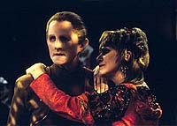
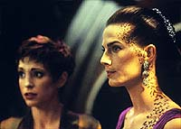
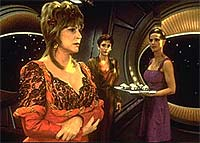

MANCHETE
DO EPISDIO
"Sonhos
de uma Noite de Vero" trekker
resulta em catstrofe para a srie
Episdio
anterior | Prximo
episdio
Sinopse:
Data Estelar:
desconhecida.
Ben Sisko tenta animar Jake, que
acaba de desmanchar o namoro com Marta. Ele diz que Jake deve
aparecer na celebrao do "Festival da Gratido"
Bajoriano que vai ocorrer na estao e deixar os problemas para
trs. Bashir e O'Brien conversam. O chefe est ansioso por rever
a sua famlia, bebendo vrias doses de caf. Os dois se
tornaram muito prximos na ausncia de Keiko. Kira estar
presidindo as festividades e Odo diz que vai comparecer pela
primeira vez. Kira e O'Brien vo esperar na comporta de ar as
chegadas respectivamente do vedek Bareil e de Keiko e Molly
O'Brien. Lwaxana Troi chega no mesmo transporte.
Odo est passando o servio da segurana do Festival para um
oficial da Frota Estelar, quando interrompido pela chegada da
embaixadora Troi. Lwaxana quer participar do festival com a
companhia de Odo, algo que o comissrio no tinha em mente. Ela
segue para se trocar e sente uma breve dor de cabea j dentro
do turboelevador. Kira e Bareil relaxam no quarto da major, quando
ela parte para ajudar Dax nos preparativos do festival. Molly est
dormindo e Keiko est morta de cansao. O'Brien quer ir ao
festival. Keiko aceita, mas no veste o vestido vermelho favorito
de Miles.

Todos
comparecem e Kira abre o festival, acendendo a pira onde "os
problemas passados sero queimados". Troi tem uma nova dor
de cabea, assim como Bareil e Jake. Kira e Bareil (j meio
distrados) andam pelo Promenade at que so interrompidos por
Jake, que quer falar com Kira sozinho de qualquer jeito e, para
surpresa da major, se declara apaixonado por ela. Bareil tambm
investe sobre Dax, que imediatamente pede licena e parte.
Troi est tentando "danar" com o comissrio, quando
ela experimenta outra dor de cabea e tambm Dax desta vez.
Keiko e Miles esto conversando quando Keiko diz que o cronograma
da sua expedio pode sofrer atrasos, algo que definitivamente
O'Brien no queria ouvir. A discusso toma um mau rumo com
O'Brien praticamente exigindo que ela fique na estao com ele.
Keiko parte chateada com o marido. Sisko tenta falar com Jake
sobre a sua "paixo por Kira", mas sem sucesso. Ben diz
ao filho sobre a recepo que ele est organizando na sala de
conferncias mais tarde.
Jadzia est preparando a sala para o jantar e diz a Sisko sobre
as investidas de Bareil. O comandante est perplexo. A que
Jadzia tenta agarrar Sisko e o comandante v que tem algo errado,
chamando Bashir para examinar a Trill. O doutor no consegue ver
nada errado em Dax. Apesar de ficar claro que h. O chefe volta
aos seus aposentos e se desculpa com Keiko, que fica atrs de uma
porta fechada o tempo todo (ele diz mesmo que est disposto a
pedir baixa da Frota e a voltar a Bajor com elas).
Bashir, Troi e Odo encontram uma inconsolvel Kira (deixada
sozinha por Bareil, que saiu procura de Dax e est sendo por
sua vez tambm perseguida por Jake). Falando sobre as suas experincias
anteriores, dele e de Kira, Bashir comea a achar que existe
realmente algo errado e parte para a enfermaria. Antes disso,
Lwaxana tem outra dor de cabea e Bashir e Kira tambm. Chegando
enfermaria, os dois se agarram desesperadamente. Na recepo,
Bareil continua atrs de Dax, e ela de Sisko. O comandante chama
Bashir e quando ningum responde manda Odo investigar (com
Lwaxana tiracolo, claro). Os dois acabam encontrando Bashir
e Kira ainda se amassando na enfermaria e o comissrio consegue
lev-los para a sala de conferncias, onde continua a toda o
improvvel tringulo amoroso de Dax, Sisko e Bareil.

Jake
fica triste quando v Kira e Bashir juntos, mas O'Brien fica
feliz com a chegada de Keiko "naquele" vestido vermelho
e um sorriso no rosto. Quark chega com uma bandeja ao mesmo tempo
em que Bareil chega ao seu limite e comea a agredir Sisko. Dax
vem para socorrer o seu "amado" e nocauteia Bareil em
segundos. Troi tem outra dor de cabea, juntamente com Quark, o
que chama a ateno de Sisko e Odo. Quark agarra Keiko e
atacado por O'Brien, quando Sisko aparta a briga. Sisko leva a
embaixadora para a enfermaria, onde Bashir diagnostica o problema
dizendo que ela contraiu o vrus da "febre Zanthi", que
faz mulheres betazides "maduras" projetarem os seus
pensamentos em outros, ou seja, projetando a sua paixo por Odo
em outros. Os nicos que reagiram deveriam estar perto dela
durante uma crise e j ter alguma tipo de atrao escondida por
aquela outra pessoa em especial.
Felizmente nada de pior aconteceu, a doena da embaixadora tem
cura e os efeitos nas outras pessoas vo sumir em no mximo dois
dias. Odo leva a embaixadora Troi comporta de ar e ela diz que
sabe da verdade. Que o comissrio ama a major Kira. O'Brien tambm
est dizendo adeus para as "suas meninas". Assim que
elas partem, Bashir joga uma raquete de raquetebol para O'Brien. O
doutor j tem a sua e uma bola, em um bvio convite para muitos
jogos a mais.
Comentrios:
Duas semanas atrs fomos "brindados" com o abismal "Meridian",
possivelmente o pior episdio da temporada e da srie. Eis que
chega esta semana mais um candidato "forte" para ambos
os ttulos. "Sonhos de uma noite de vero"
considerado por muitos o pior trabalho do "Bardo"
Shakespeare. Vrias verses foram feitas com atores ao longo dos
anos, muitas bastante ruins, mas esta verso apresentada por DS9
corre o risco de ser a pior de todas. Mais detalhes, sem ter a
necessidade de ser infectado(a) pela "menopausa teleptica"
da embaixadora Troi, nas linhas abaixo.

Majel
Barrett uma das piores atrizes a trabalhar em Jornada nas
Estrelas e, curiosamente, uma das com o maior nmero de
participaes. Ela foi a "Nmero Um" original do
capito Pike ("The
Cage" e "The Menagerie"), foi
Christine Chapel (enfermeira, depois doutora) em diversos episdios
e mesmo filmes da Srie Clssica, alm de fazer as vozes
de diversos computadores por todos os cantos do universo do
franchise. Entretanto a "sua mais vil manobra" contra a
integridade de Jornada veio na forma da personagem da
embaixadora Lwaxana Troi, me da conselheira Deanna Troi, da
Enterprise, papel para o qual, dizem as ms lnguas, ela no
precisava nem representar (como se ela pudesse fazer o contrrio),
pois ela j era a prpria.
Ela ajudou a destruir os seguintes episdios de A Nova Gerao:
"Haven",
"Manhunt", "Menage a Troi", "Half
a Life", "Cost
of Living" e "Dark Page". Todos, sem
exceo, entre os piores daquela srie. No contente com isso,
ela tambm arrumou tempo para dinamitar trs episdios de DS9:
"The
Forsaken", "Fascination" (a ofensa
atual) e "The Muse". Todos entre os piores da srie
tambm. Nove episdio de Jornada! Ser que nenhum
produtor conseguiu ver um padro to bvio?
Considerando a "menopausa betazide" vista aqui, "Fascination"
no o primeiro episdio que envolve os "problemas
mentais" de Lwaxana. Temas similares j foram explorados em "Manhunt"
e "Dark Page". Isso sem falar que parte da trama
de "Sarek" (da terceira temporada de A Nova
Gerao) envolveu o embaixador Vulcano provocando caos na
Enterprise devido ao descontrole das suas habilidades telepticas
(vitimado por uma doena mental degenerativa).
Um problema sempre associado a Lwaxana que ela muitas vezes
apresentada como uma espcie de predadora sexual. Assim o foi com
Picard e tambm com Odo. Por que ningum (dentre e fora do
universo ficcional de Jornada) nunca tomou uma atitude
oficial com relao ao assdio de uma pessoa que claramente
utiliza a sua posio para satisfazer desejos e pressionar
potenciais pretendentes? E principalmente: por que tal atitude
normalmente tratada como uma piada inofensiva enquanto atitudes
similares (as de Tiron em "Meridian", por
exemplo) ganham conotaes mais sinistras do roteiro?
Outra questo que, se eram "os pensamentos amorosos de
Lwaxana para com Odo" (TM) os agentes da confuso, por que no
ocorreu um levante popular com todos apaixonados por Odo ao invs
dos eventos aleatrios apresentados no episdio? (J pensaram
no Quark tentando ficar a ss com Odo a todo custo?)

Mesmo
com essa premissa batida e pouco inspirada e com um "agente
do caos" (TM) do "calibre" da embaixadora Troi, o
episdio poderia ter sido muito melhor do que foi. O grande
problema que as paixes que ocorrem no episdio so
completamente aleatrias, ou seja, elas no surgem da
caracterizao dos personagens que conhecemos e tampouco trazem
qualquer nova informao sobre eles e sobre a sua dinmica
interpessoal. Em outras palavras, alm de toda a estupidez da
premissa, temos que acompanhar os personagens atuando totalmente
fora de suas caracterizaes, em situaes que no fazem
sentido algum, em primeiro lugar, com resultados que no oferecem
nenhum "payoff" dramtico de qualquer espcie.
Este episdio bem que poderia se chamar: "A morte de Bareil,
Parte I". O relacionamento entre Kira e Bareil caiu novamente
em total "banalidade" (mais detalhes em "Shadowplay")
e a forma como Bareil casualmente fala de kai Winn e de como virou
um dos seus consultores constrangedora (especialmente por que
tais elementos constituem uma das principais facetas da srie).
Se "com a cabea limpa" ele j estava fora de
controle, sob a influncia da doena de Troi ele se tornou uma
das figuras mais patticas e bizarras da histria de Jornada, e
no estou brincando quanto a isto (alm do qu, palavras faltam
para descrever o nvel abismal da atuao de Philip Anglim
aqui).
As paixes de Bareil por Dax, de Dax por Sisko e a mtua entre
Bashir e Kira (esses dois se agarrando foi constrangedor de to
ruim) so inacreditavelmente sem sentido. A falta de reao de
Kira frente mudana de comportamento de Bareil foi inacreditvel.
Isso sem falar na (absolutamente absurda) paixo de Jake por Kira
(o fim de relacionamento entre Jake e Marta --ver "The
Abandoned"-- veio sem surpresa, pois a logstica
para introduzir mais uma personagem recorrente no pareceu ser
justificada pelo limitado potencial das histrias envolvendo tal
relacionamento). difcil acreditar que Sisko no tenha
nenhuma paixo secreta na estao tambm.
Odo mostrou ser imune telepatia de Troi e se manteve o mais
firmemente caracterizado personagem em todo o episdio (algum
tinha que servir de contraponto para a embaixadora Troi, a qual se
lembrava bem do seu encontro anterior com o comissrio --ver "The
Forsaken"). Descobrimos "finalmente" que
ele ama Kira e que a major no somente no corresponde a tais
sentimentos como no tem nenhuma idia a respeito da existncia
deles em primeiro lugar.

Quark
at que manteve a linha do personagem a maior parte do tempo. A
exceo obviamente se deu quando ele foi possudo pela
"menopausa da madame embaixadora". Nessa hora o Ferengi
"esfregou as orelhas" com Keiko, em uma das cenas mais
constrangedoras de toda a srie (O'Brien agarrando as orelhas do
Ferengi tambm foi preo duro). Outra paixo absolutamente
aleatria. Um dos grandes mistrios do episdio como Quark pde
ser afetado telepaticamente por Troi se os Ferengis so imunes
telepatia betazide.
A nica coisa que realmente se salva no episdio a continuao
da histria entre o casal O'Brien, vista pela ltima vez em "The
House of Quark". Entretanto, tal material, ainda que
digno e bem executado, no consegue salvar o episdio do
completo colapso (apesar de no fazer sentido que nenhum dos dois
tenha alguma atrao latente por outra pessoa na estao).
Tambm interessante ver como cresceu a amizade entre Bashir e
O'Brien na ausncia de Keiko, sendo a cena final um clssico
entre os dois.
O diretor Brooks errou na mo com uma atitude bizarra e "pra
l de over" no segmento (fato que a sua j citada tcnica
de "mltiplos nveis" --ver "Tribunal"
e "The
Abandoned"-- exibida tambm aqui obviamente no
consegue esconder). A cena em que Jadzia nocauteia Bareil digna
da "Antologia do pior impossvel" (TM). Um fato engraado
que alguns dos artistas convidados a "animar" o
festival no pareceram muito bem preparados em seu ofcio e
observ-los ao fundo em algumas cenas, acabou por trazer uma
grande dose de humor involuntrio a esse atpico episdio. De
fato, foram tantas as liberdades tomadas pela produo para
tornar esse um episdio incomum que se faz verdadeiramente possvel
acreditar que ele de fato nunca existiu (apesar disso
--infelizmente-- no ser verdade).
Ren Auberjonois foi o destaque da tragdia desta semana entre
os regulares. Meaney foi adequado e o resto foi calamitoso. Quando
a cena inicial entre Brooks e Lofton no funcionou (fato
absolutamente raro entre os dois na srie), isto serviu como um
alerta para a catstrofe iminente que se seguiria.
Barrett e Anglim que deveriam ter formado o casal, o casal do
"pior impossvel". Chao foi a nica atriz a defender o
pagamento dentre os convidados e Hatae foi "bonitinha como
sempre".
Molly vomitando em cima do chefe O'Brien e Bashir dizendo a Sisko
(sobre a paixo de Dax pelo comandante) para "nem pensar
nisso" so outros grandes indicadores da qualidade do episdio.
"Fascination" um dos piores episdios de DS9.
Com uma premissa absurda, batida, mal desenvolvida e baseada na
presena da "destruidora de episdios" (TM) Lwaxana
Troi. As caracterizaes e as atuaes do episdio so ruins
como poucas vezes se viu na srie e o outrora interessante
personagem do vedek Bareil emerge do segmento totalmente
devastado. Um golpe do qual o personagem nunca mais se recuperou
ao longo da srie. Mais um antiepisdio na conta de DS9.
Citaes
Jake - "Marta was a
mistake. She was too young, too immature for me. Major Kira is a
woman."
("Marta foi um erro. Ela era muito jovem, muito imatura para
mim. A major Kira uma mulher.")
O'Brien - "You're right; I'm an idiot."
("Tem razo; eu sou um idiota.")
Bashir - "How many games of racquetball have we played in
the last two months?"
("Quantos jogos de raquetebol ns jogamos nos ltimos dois
meses?")
O'Brien - "I don't know... 15, maybe 20?"
("No sei... 15, talvez 20?")
Bashir - "Try 70; I've been keeping track of that, too.
And you know what all those games have proved to me? That I'm a
poor substitute for your WIFE."
("Tente 70; eu tenho contado isso, tambm. E voc sabe o
que todos esses jogos me provaram? Que eu sou um pobre substituto
para sua esposa.")
O'Brien - "I coulda told you that 60 games ago."
("Eu poderia ter dito isso a voc 60 jogos atrs.")
Trivia:
 Ira Steven Behr lembra do episdio como um (necessrio segundo
ele) segmento leve antes do pesado "Past Tense".
E mesmo Behr admite os problemas do episdio. Ele lembra que foi
provavelmente Michael Piller quem trouxe a idia de fazer uma
verso de "Sonhos de uma Noite de Vero" (de
Shakespeare) em DS9. O diretor Avery Brooks confirma que o
episdio foi de fato "pra l de over".
Ira Steven Behr lembra do episdio como um (necessrio segundo
ele) segmento leve antes do pesado "Past Tense".
E mesmo Behr admite os problemas do episdio. Ele lembra que foi
provavelmente Michael Piller quem trouxe a idia de fazer uma
verso de "Sonhos de uma Noite de Vero" (de
Shakespeare) em DS9. O diretor Avery Brooks confirma que o
episdio foi de fato "pra l de over".
O cinegrafista Jonathan West diz que foram tomadas liberdades no
episdio, que no so usuais em um tpico episdio da srie.
Os cenrios foram mais iluminados e as cores foram realadas.
Outro ponto curioso foi a utilizao de elementos reflexivos
como purpurina ao fundo das cenas, para tentar dar um aspecto
"de mgica" ao episdio. A paleta de cores para o episdio
tambm foi expandida. Cores literalmente proibidas (em condies
normais), como roxo, foram utilizadas.
O responsvel pelos vesturios, Robert Blackman, tambm
aproveitou a liberdade utilizada na produo do episdio. Idem
para o compositor Dennis McCarthy, que introduziu algum humor na
trilha, o que tambm no usual.
Vrios atores no gostaram do resultado final. Armin Shimerman
considerou o episdio tolo e "embaraoso para ns, por
estarmos atuando fora dos nossos personagens e fazendo cenas
amorosas envolvendo pessoas que supostamente so apenas amigas
entre si", segundo o alter-ego de Quark. El Fadil tambm no
aprovou o segmento e admite no ter ensaiado os
"amassos" entre ele e Nana Visitor.
Este o segundo episdio de DS9 com a embaixadora betazide
Lwaxana Troi (vivida por Majel Barrett-Roddenberry, viva do
criador de Jornada nas Estrelas, Gene Roddenberry). Ela
apareceu inicialmente em "The
Forsaken", da primeira temporada, e tornaria a
aparecer pela ltima vez em "The Muse", da
quarta temporada. Em uma parte do roteiro no-includa na verso
final do episdio, Lwaxana justifica o fato de ela saber sobre o
Dominion (e de que so os seus Fundadores formados pela raa de
Odo) dizendo ter "amizades no alto escalo", entre elas
a almirante Nechayev, que ela considera a "irm que ela
nunca teve".
Neste episdio estabelecido acima de qualquer dvida que Odo
ama Kira e que o sentimento alm de no ser recproco, no
nem ao menos notado pela major.
A prxima participao do Vedek Bareil na srie se dar nesta
mesma temporada, em "Life Support", ao lado de
Kai Winn.
Bashir e O'Brien jogaram 70 jogos de
raquetebol desde "The
House of Quark", quando Keiko e Molly deixaram a estao
para uma expedio em Bajor. As "duas mulheres da vida de
O'Brien" s retornariam a parecer em cena em "Acccession",
da quarta temporada (Keiko trar uma surpresa para Miles em tal
episdio --a gravidez do segundo filho do casal).
Behr considerou a melhor coisa do episdio o enfoque no
relacionamento entre Keiko e O'Brien (entretanto uma cena teve de
ser refilmada, pois a discusso entre o casal foi atuada de forma
por demais agressiva de parte a parte). Um dos momentos favoritos
de Behr na temporada foi a cena final em que, mal Keiko pe o p
fora de DS9, Bashir j chama O'Brien para mais um jogo de
raquetebol. A amizade entre os dois floresceu na ausncia de
Keiko. O relacionamento entre os dois o favorito de Behr na srie.
O maior feriado Bajoriano (que tambm comemorado em DS9
anualmente) aquele do "Festival da gratido". O propsito
colocar os problemas para trs e recomear a vida. Listas de
problemas pessoais so escritas mo, enroladas e queimadas em
uma pira especialmente montada para tal propsito. Durante as 26
horas (um dia padro Bajoriano e tambm de DS9) do festival,
enquanto artistas populares se apresentam, os participantes mantm
a tradio "queimando os seus problemas".
"Peldor Joi" o cumprimento padro entre os
participantes do festival. Existe a especulao que o
"Peldor festival" a que Sisko se refere em "Rapture"
(da quinta temporada), seja de fato o "Festival da gratido",
sendo "Peldor" a palavra Bajoriana para "gratido".
Tivemos a participao de James Crocker, veterano da segunda
temporada de DS9, com crdito de histria, seu ltimo na
srie. Philip Lazebnik (um escritor de comdias) faz a sua nica
participao em DS9 aqui (ele havia trabalhado
anteriormente em A Nova Gerao em episdios como "Devil's
Due" e "Darmok").
O nome Ermat Zimm (da fala de Quark, quando ele est tentando
vender as "infames canetas destinadas a se tornarem itens de
colecionador") uma pequena homenagem a Herman Zimmerman, o
grande responsvel pelo visual da estao.
Ficha
tcnica:
Histria de Ira Steven Behr
& James Crocker
Roteiro de Philip Lazebnik
Direo de Avery Brooks
Exibido em 28/11/1994
Produo: 056
Elenco:
Avery Brooks como
Benjamin Lafayette Sisko
Ren Auberjonois como Odo
Nana Visitor como Kira Nerys
Colm Meaney como Miles Edward O'Brien
Siddig El Fadil como Julian Subatoi Bashir
Armin Shimerman como Quark
Terry Farrell como Jadzia Dax
Cirroc Lofton como Jake Sisko
Elenco convidado:
Majel
Barrett-Roddenberry como Lwaxana Troi
Philip Anglim como Bareil Antos
Rosalind Chao como Keiko O'Brien
Hana Hatae como Molly O'Brien